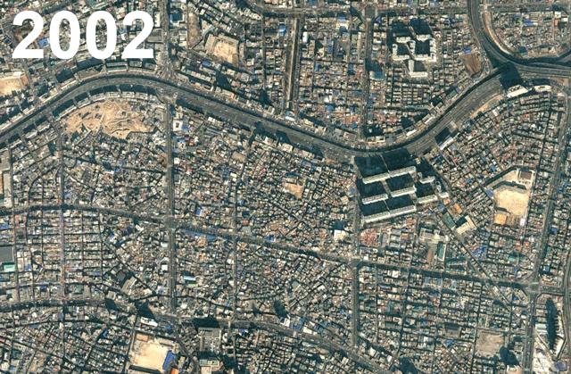

3/27/2019
Recently, I have been reading the awesome book by Jonathan F.P. Rose, The Well-Tempered City. This book discusses topics such as resiliency and circularity of city resources. In his chapter on natural infrastructure, he introduced a counterintuitive principal of road networks where removing a road network connection can acutally improve travel times for all people traversing the road network. It is called Braess's Paradox developed by a mathematician in 1968.
Braess's Paradox goes something like this: New road connections can actually increase travel time *or* removing certain existing road connections can actually decrease travel time for all drivers.
This paradox occurs because most drivers make rational, or as some might say, "selfish" decisions to take the route with the least travel time. This paradox draws from the concept known as the Tradegy of the Commons. We see people working individually and rationally making choices for their own self-interest, but in doing so hurts everyone in the group including themselves. To sum it up, short-term self-interested gains over the common good hurts everyone in the long run. It helps explain our human need for community but that is a different topic.
Anyway, back to Braess's Paradox. We now have the instant feedback of real-time traffic information right in our smart phones. We just plug in our start and end destination and out pops an optimized route for our current traffic situation. This new reality begs the question; do map routing engines take into consideration Braess's Paradox? If the most direct route is too congested, Google Maps will route me a different way. In this way, yes it does. But beyond avoiding congested areas, are our mapping algorithms taking in the broader transportation network to keep it flowing optimally?
Has the evolution of routing technology improved the road network performance compared to the pre-smart phone era? The smart phone age has shown us multiple situations of drivers taking "short cuts", taking the unintended route on neighborhood streets causing headaches for locals and municipal leaders. In a few situations, local leaders shut down certain roads to thru traffic to try and control the issue.
These stories are a perfect example of Braess's Paradox that people were not aware of before real-time traffic data was available. Braess's Paradox is seen most often in cross connections between competing parallel arterial roadways, which just happens to be neighborhood streets in most cases. As we design and improve our transportation network, it is prudent to consider this paradox and how technology, may cause people to use the transportation network.